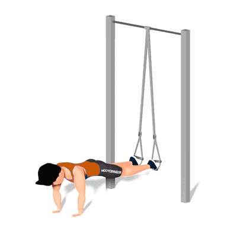

Abdominal no TRX

Esse exercício trabalha a musculatura da região abdominal, trazendo como benefício a tonificação dos músculos, aumento da flexibilidade, melhora da estabilidade e ganho de força de explosão.
Ficha Técnica
Tipo: Funcional
Grupo Muscular: Abdome
Aparelho: Nenhum
Músculos: Nenhum
Como realizar
- Conecte um TRX a uma barra fixa e deixe os estribos suspensos a cerca de 7 cm do chão;
- Posicione os pés nos estribos de forma que o dorso de cada pé esteja voltado para baixo;
- Comece o exercício na posição de flexão, com as mãos levemente mais afastadas que a largura dos ombros;
- Mantenha o tronco firme e encaixado e traga os joelhos em direção ao tórax;
- Faça uma pausa quando os joelhos estiverem diretamente sob o tórax e inverta a direção de volta à posição inicial.
 RC STORE
RC STORE